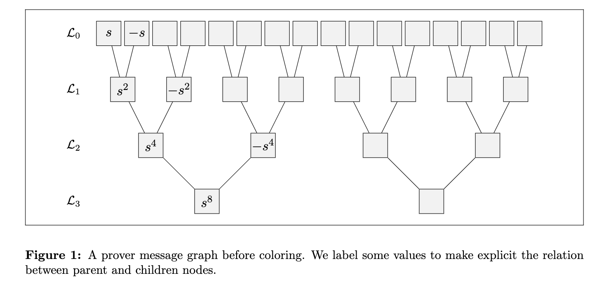
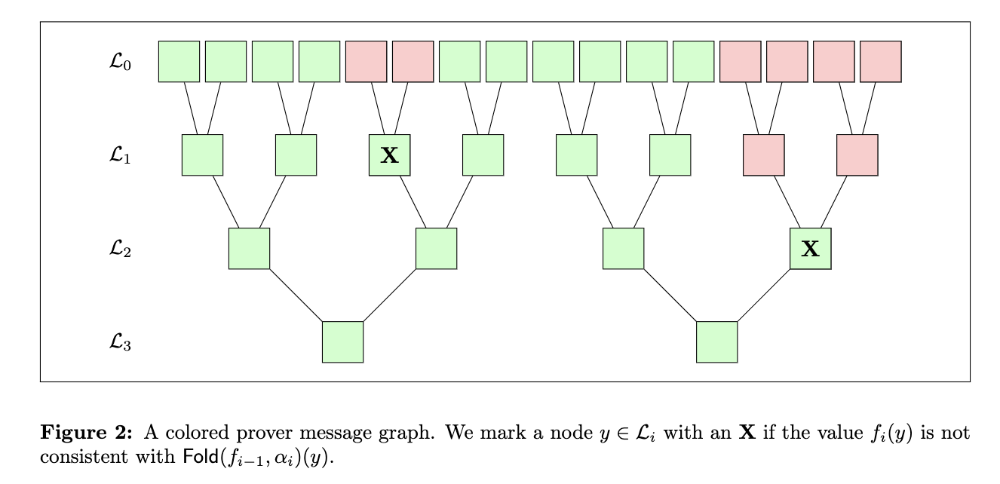
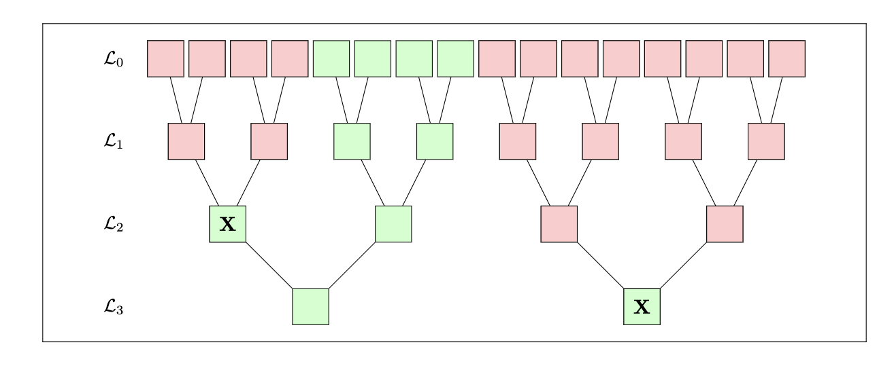

Why does FRI work?
This article is cross-posted from the ZK Security blog.
The FRI protocol is a key building block for many SNARKs deployed in production today. There are plenty of great lectures out there explaining what FRI is and how it works. Among them, I highly recommend the ZK Whiteboard Session modules with Dan Boneh (S2M7, S2M8). For those who prefer a more practical introduction, I recommend following a tutorial with accompanying code, for example Part III of STARK 101 by StarkWare.
In this post, I won’t rehash the contents of the amazing tutorials listed above. I want to answer the question: why is FRI secure? Why does the execution of this protocol gives us satisfactory guarantees that the prover’s initial message is close to a Reed-Solomon codeword?
These questions are usually answered by the security proof of a protocol. Needless to say, the security proof of FRI is not an entry-level read. However, with co-authors Albert and Benedikt, I recently attempted to give a simpler proof (available on ePrint). This post is a summary of the ideas we used there.
I’ll assume that readers are familiar with FRI and its associated tools and jargon. I’ll first go through a quick recap of the mechanics of the protocol, mostly to define the notation I will use throughout. Then I’ll introduce the “prover message graph”, a useful tool for the security proof of FRI. After that, we will discuss a key security property of the “folding” operation used in FRI and finally argue that the protocol is secure.
FRI recap and notation
The FRI protocol is used to prove that a prover function $f_0$ is close to a given Reed-Solomon (RS) code. It works by successively “folding” the prover’s function using a verifier challenge. Eventually, when the function is small enough, the verifier can read it in full and check that it is a codeword from a smaller RS code. The verifier then performs spot checks between all the prover’s messages to ensure that the fold operation was computed correctly.
In this article, I will use the notation $\mathsf{RS}[\mathbb{F}, \mathcal{L}, d]$ to denote a Reed-Solomon code defined over the finite field $\mathbb{F}$ with evaluation domain $\mathcal{L} \subseteq \mathbb{F}^*$ and degree bound $d \in \mathbb{N}$. The rate of an RS code is written $\rho = d / |\mathcal{L}|$.
Concretely, I will consider the example where the initial domain $\mathcal{L}_0$ is the $16$-th roots of unity and the initial degree bound is $d_0=8$. Consecutive codes are defined over the $8$-th, $4$-th and $2$-th roots of unity with degree bounds $4$, $2$ and $1$. I’ll write $f_0, f_1, f_2, f_3$ to denote the prover messages and $\alpha_1, \alpha_2, \alpha_3$ to denote the verifier’s folding challenges.
Tracking prover messages
The first thing we need to be aware of in our security analysis, is that the prover might have sent a function $f_{i+1}$ that is not $\mathsf{Fold}(f_i, \alpha_{i+1})$ (i.e., the honest fold of $f_i$ using the challenge $\alpha_{i+1}$). To this end, we define the prover message graph. Each layer of the graph represents an evaluation domain and the prover message on that domain. We can draw edges between layers when the points are related: for example both the points $s$ and $-s$ in layer $0$ have an edge going to the point $s^2$ in layer $1$. The graph is illustrated below.

We can now color the graph to indicate what will happen when the verifier runs the query phase. We’ll use green to indicate an accepting query and red to indicate a rejected query. To perform the coloring, we consider nodes in groups of 3: one node in layer $i$ and its two relatives in layer $i-1$. If the $\mathsf{Fold}$ operation is computed correctly on those nodes, we leave them as they are; otherwise if $\mathsf{Fold}$ is incorrect, we mark the node on layer $i$ with an $\mathbf{X}$. Concretely, using the labelling from the image above, we would consider the group $(s, -s, s^2)$, compute $\mathsf{Fold}(f_{0}, \alpha_1)(s^2)$ from $f_0(s)$ and $f_0(-s)$, and mark the node $s^2$ with an $\mathbf{X}$ if that value was not consistent with $f_1(s^2)$. This is exactly what the verifier does with its check!
Once we’ve considered all groups of three, we can assign colors. All paths that start from a leaf in layer $0$ and terminate with an $\mathbf{X}$ are marked red (excluding the $\mathbf{X}$). We do this to reflect the fact that starting from such leaves, the verifier will inevitably arrive to the $\mathbf{X}$ and notice the inconsistency. All other nodes are colored green. An example is given below.

At this point, I would like to highlight some important intuition about the colored graph:
- If the verifier queries layer 0 at a red node, it will reject. Therefore, the fraction of green nodes is exactly the probability that the verifier accepts.
- Red propagates upward from an $\mathbf{X}$. This means that prover does not gain an advantage by folding dishonestly. In addition, we see that the later it does so (e.g., at the final round), the more it reduces the probability of getting accepted.
- The set of green nodes represents the sets where all folds are performed honestly.
Now the key question remains: why can we deduce that $f_0$ was close to $\mathsf{RS}[\mathbb{F}, \mathcal{L}_0, d_0]$ when there is a large fraction of green nodes in layer $0$? As we will see next, this is due to the fact that the verifier checks that the final function is in the final code and from an important security property of $\mathsf{Fold}$.
Key property of $\mathsf{Fold}$
At the end of the FRI interaction, the verifier reads the final function in full and checks that it is in the final code. In our example, the verifier reads $f_3: \mathcal{L}_3 \to \mathbb{F}$ and checks that it is a constant polynomial. Ideally, this observation could “bubble up” through the prover message graph. We can state an ideal property as follows:
- (ideal property) if there exists a codeword $u_i \in \mathsf{RS}[ \mathbb{F}, {\mathcal{L}_i}, {d_i} ]$ that agrees with $f_i$ on green nodes, then there exists a codeword $u_{i-1} \in \mathsf{RS}[ \mathbb{F}, {\mathcal{L}_{i-1}}, {d_{i-1}} ]$ that agrees with $f_{i-1}$ on green nodes.
With such a property our task would be solved! We would inductively apply the property working our way up the graph and find that the fraction of green nodes in layer $0$ is at least the agreement between $f_0$ and a codeword. Unfortunately, things are not so simple. The ideal property does not always hold.
What we can do on the other hand is to relax this property and only require that it holds with high probability over the verifier’s folding challenges. The yields the following real property:
- (real property) if (a) there is a large fraction of green nodes and (b) there exists a codeword $u_i \in \mathsf{RS}[\mathbb{F}, {\mathcal{L}_i}, {d_i}]$ that agrees with $f_i$ on green nodes, then with high probability over the verifier message $\alpha_i$ there exists a codeword $u_{i-1} \in \mathsf{RS}[\mathbb{F}, {\mathcal{L}_{i-1}}, {d_{i-1}}]$ that agrees with $f_{i-1}$ on green nodes.
The notion of what is a “large fraction” of green nodes is intentionally loose. Let’s denote $\mathsf{B}^\star$ to be the measure of “large enough”. Ideally we want $\mathsf{B}^\star$ to be low as we will see in our argument later (see Final argument, case 1). Currently, we have satisfactory results for the case $\mathsf{B}^\star = \frac{1+\rho}{2}$. There are private drafts making the rounds that prove the property for $\mathsf{B}^\star = \sqrt{\rho}$ and we even conjecture that this fraction can be as small as $\mathsf{B}^\star = \rho$ (recall that $\rho < 1$ and therefore $\rho < \sqrt{\rho}$). Proving this property for small bounds is an open problem for which the Ethereum Foundation is setting up to one million dollars (!!) in prizes.
Final argument
We can now finish our security analysis using the “real property” that allows to bubble up agreement through large enough sets of green nodes in the prover message graph. The only subtlety is that we need to deal with the case where there is less than a $\mathsf{B}^\star$-fraction of green nodes at any layer of the graph. We argue by separating two cases:
- Case 1, there is a layer $i$ which has less than a $\mathsf{B}^\star$-fraction of green nodes.
- Case 2, all layers have at least a $\mathsf{B}^\star$-fraction of green nodes.
Case 1: small fraction of honest folds
We first consider the case where there is at least one layer where the real property cannot be applied. That is, the $i$-th layer has less than a $\mathsf{B}^\star$-fraction of green nodes. Equivalently, this layer must have at least a $(1- \mathsf{B}^\star)$-fraction of red nodes. The figure below shows an example of “case 1”.

Recall that by our graph coloring rules, all paths that lead to an $\mathbf{X}$ are marked red. From this rule, it is easy to establish that “red always propagates upwards”. Therefore, we can show that if there is a layer where there is at least a $(1- \mathsf{B}^\star)$-fraction of red nodes, all layers above it will also have at least a $(1- \mathsf{B}^\star)$-fraction of red nodes. In particular, layer $0$ has at least a $(1- \mathsf{B}^\star)$-fraction of red nodes.
From this discussion, we conclude that layer $0$ has at most a $\mathsf{B}^\star$-fraction of green nodes and that the verifier will accept with probability $\mathsf{B}^\star$. In practice, we want to reject provers that behave as in case 1 and therefore want $\mathsf{B}^\star$ to be as small as possible.
Case 2: large fraction of honest folds
For case 2, we can refer to the illustration given in Figure 2. Since the sets of green nodes are large enough, we can apply our “real property” and conclude that agreement bubbles up assuming that all folding challenges were “good”. Therefore, conditioned on having only “good” challenges, the agreement between $f_0$ and the initial code $\mathsf{RS}[\mathbb{F}, \mathcal{L}_0, d_0]$ is at least the fraction of green nodes in the top layer. Alternatively, in terms of distance (rather than agreement) we have shown that the verifier’s acceptance probability is at most $1-\delta$, where $\delta = \Delta(f_0, \mathsf{RS}[\mathbb{F}, \mathcal{L}_0, d_0])$ is the relative distance between $f_0$ and the initial code.
Conclusion
This concludes our overview of how FRI works! The argument stems from an important property of the $\mathsf{Fold}$ function: “agreement bubbles up the graph” when there is a large enough fraction of honest folds. We deal with the case where the fraction of honest folds is not large enough by arguing that there must be a large fraction of dishonest folds. In such a case, the verifier is likely to query them and reject.
There is ongoing research on proving that the property holds for a notion of “large” that is as small as possible. This allows us to stay in case 1 as much as possible and gives us a tighter security bound. In return, tighter bounds allow us to have shorter proofs and do less prover and verifier work for the same level of security.
Acknowledgements
Thank you to Varun Thakore, 0xteddav (David), Albert Garreta and Kobi Gurkan for carefully proof-reading this article and sharing many helpful questions, corrections and suggestions.